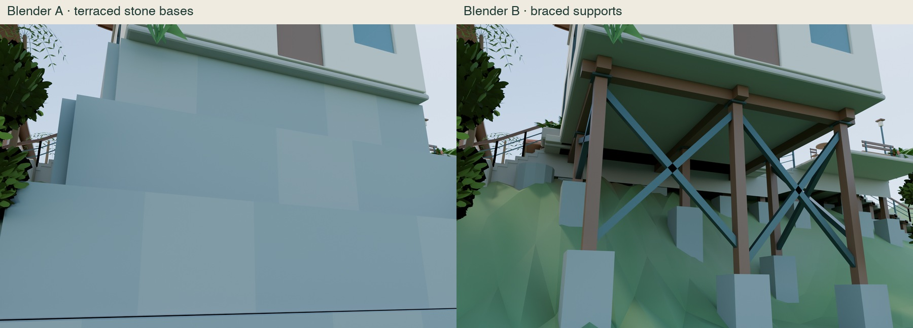
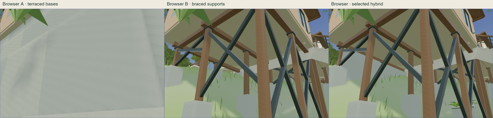
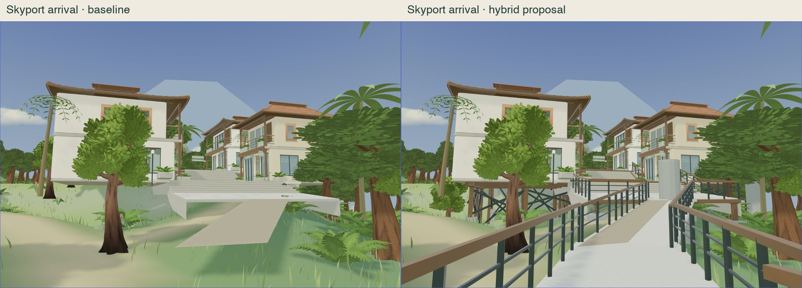
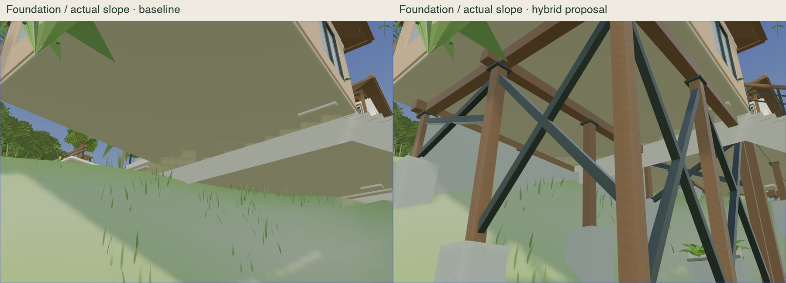
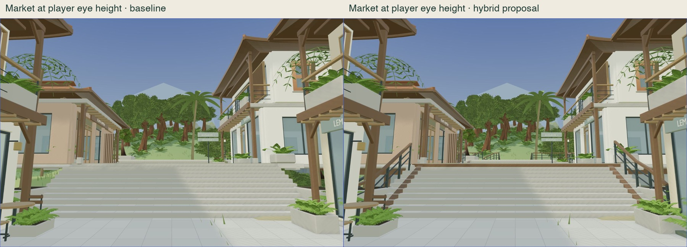
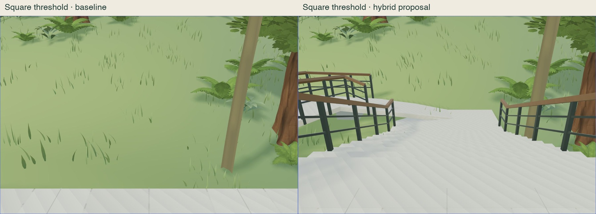
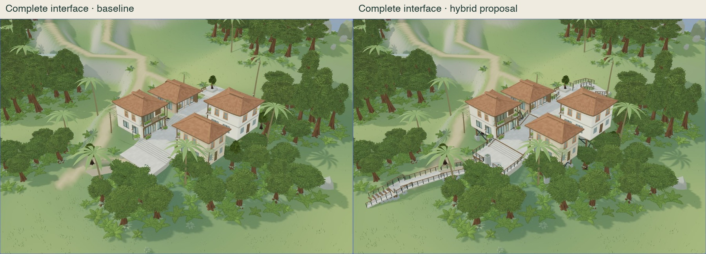
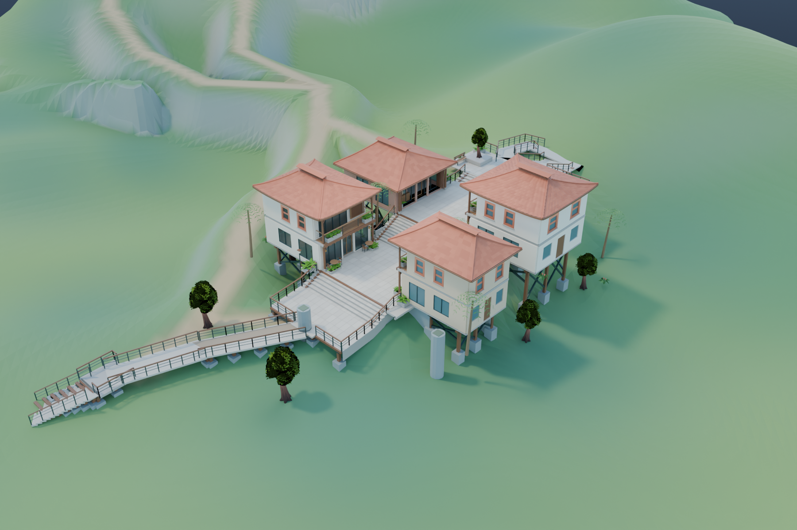
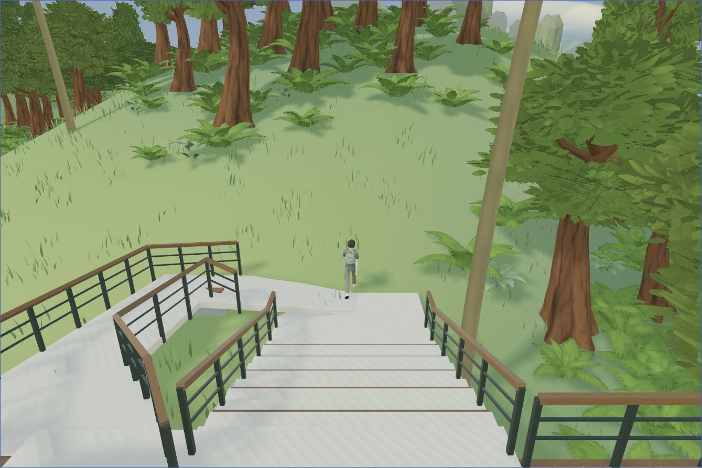

AR(N)AN Urban Atlas · S2-E design review
Grounded buildings. Connected public paths.
Recommended: the hybrid of braced supports, localized stone foundations and planting. Human design approval remains pending. Production is unchanged.
Interactive isolated overlay · Blender design scene · Findings and measurements · Source record
| Verification | Measured result |
|---|
| Main route, both directions | 69.4 m · about 33.1 s each · no large support discontinuities |
| Square ramp, both directions | 16.75 / 16.76 m · about 8.09 s each |
| Selected visible additions | 15,652 triangles · 13 primitives · 1,070,624 bytes |
| Full-route frame intervals, M4 Pro | 4,438 frames · 5.6 ms median / 12.0 ms p95 · authored glass preserved |
| Regression and preservation | 43 existing tests + 12 controller simulations pass · 1,430 protected files unchanged |
Foundation alternatives

Actual Blender renders, identical camera/daylight. A is visually heavy and requires substantial localized fill. B preserves open ground with braced framing.
Actual browser comparison on the unchanged island. The selected hybrid adds low stone infill and planted toes to the braced system.
Five matched before/after views

Arrival toward the market. The new landing is only a provisional interface; no skyport terminal is built. Before camera/settings · After camera/settings

Foundation support on the measured slope. Inspection camera is 1.65 m above actual terrain. Full browser capture

Market eye level. Approved buildings, floors, materials and original GLB bytes remain unchanged; exposed circulation edges receive guards.

Eleven shallow steps replace the former 0.89 m drop; a garden ramp provides another controller-compatible connection. Both directions were actually traversed. No full Town Square is built.

Complete site interface. Original island terrain and vegetation are preserved. Four standalone showcase canopies align vertically to natural ground only in this isolated proposal.
Selected Blender design

Editable scene with buildings, streets, landscape, props, alternatives, exact terrain reference and collision references in separate collections. The browser includes the complete original island landscape.
Existing controller, actual route

The existing explorer/controller completes the route. Running, jumping, return movement and lateral guard contact were also tested.
Animated main-route results · Animated ramp results · Run/jump/guard results · 20/30/60 Hz simulations · Full-route performance · Artifact and terrain-contact checks
Review gate
No unresolved controller blocker remains on the tested public routes. Owner design approval is pending; production collision wiring and travel outside the tested routes remain unverified. Full skyport, square and Guild architecture remain unbuilt, and the future Guild vista is still partly forested. The foundations are game-environment proposals, not certified structural designs.
Stopped at S2-E. No production deployment or next phase is authorized.